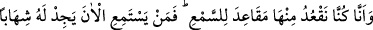
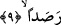

(Rabbin) onu gitgide artan çetin bir azâba uğratır.
“Doğrusu biz (cinler), göğü yokladık,” yâni meleklerin konuştukları ya da haber
verdikleri şeyleri, kâhinler arasında yaymak için göğe ulaşmak istedik. “Yoklamak”
şeklinde tercüme edilen “lems” kelimesi istiâre yoluyla “herhangi bir şeyi talep etmek
için dokunmak” mânâsında kullanılmıştır. İstiâre şuradan kaynaklanmaktadır: Herhangi
bir şeyi talep etmek, ona dokunmaya, ona el değdirmeye benzetilmiştir. Böylece elle
dokunmak ile talep etmek fiillerinden her biri o şeyin hâli hakkında bilgi edinmeye
vesile kılınmış, benzetme böylece sağlanmıştır. Bu benzetme sağlandıktan sonra talep
etme hâdisesi dokunma fiili ile ifâde olunmuştur.
Râğıb İsfahânî der ki: Dokunma anlamına gelen “lems”; cildin dış yüzeyi ile herhangi
bir şeyi kavramak ve algılamak demektir. Bu tıpkı “mess: temas etme”ye benzer, işte
talep etme fiili insanın cildinin dış yüzeyini dokundurarak o şey hakkında bilgi edinme
ile ifâde olunmuştur.
Keşfu’l-esrar’da bu kelimenin aynı anlamda kullanıldığını gösteren şöyle bir hadis
yer alır: Adamın biri Peygamber (s.a.) Efendimiz’e: “Ey Allah’ın Rasûlü! Benim karım,
kendisine dokunanın elini geri çevirmez” der.[138] Adam bu ifâdesiyle, kendisinden bir
ihtiyaç talebinde bulunanın elini boş çevirmediğini ifâde ederek karısının malını zayi
ettiğinden şikâyet etmektedir.
“Fakat onu sert/güçlü bekçilerle”, koruyan, geleni geri çeviren meleklerle, “alev
hüzmeleriyle doldurulmuş bulduk.” Âyette zikredilen güçlü bekçilerden maksad
meleklerdir. Bunlar gökyüzüne gelenleri geri kovmaktadırlar. “Haras” bekçi
anlamınadır. “Şedîden: güçlü” kelimesi çoğul değil tekildir. Çünkü çoğul olsaydı
“şidâden” denirdi. “Bekçilerle doldurulmuş” ifâdesi “vecednâ” fiilinin mef’ûlünden
hâldir. Bu yaptığımız tahlil “vecedna” fiiline biz bulduk ve tesadüf ettik mânâsı
verilirse böyledir. Fakat bu fiili ef’âl-i kulubdan kabul edersek o zaman “güçlü
bekçilerle doldurulmuş” ifâdesinin bu fiilin ikinci mef’ûlü olduğunu söylemek zorunda
kalırız. Bu takdirde âyetin mânâsı; “Doğrusu biz (cinler), göğü yokladık ve orasını
güçlü bekçilerle, alevlerle doldurulmuş bildik” şeklinde olur. “Şühüb/alevler”, daha
önce geçen “hares” kelimesi üzerine mâtuftur ve dilbilgisi yönünden tahlili aynen onun
gibidir. Bu kelime “şihâb” kelimesinin çoğuludur. Şihâb demek, yıldızların ateşinden
kopmuş şûle demektir. Bu kelimeyi daha evvel incelemiştik.